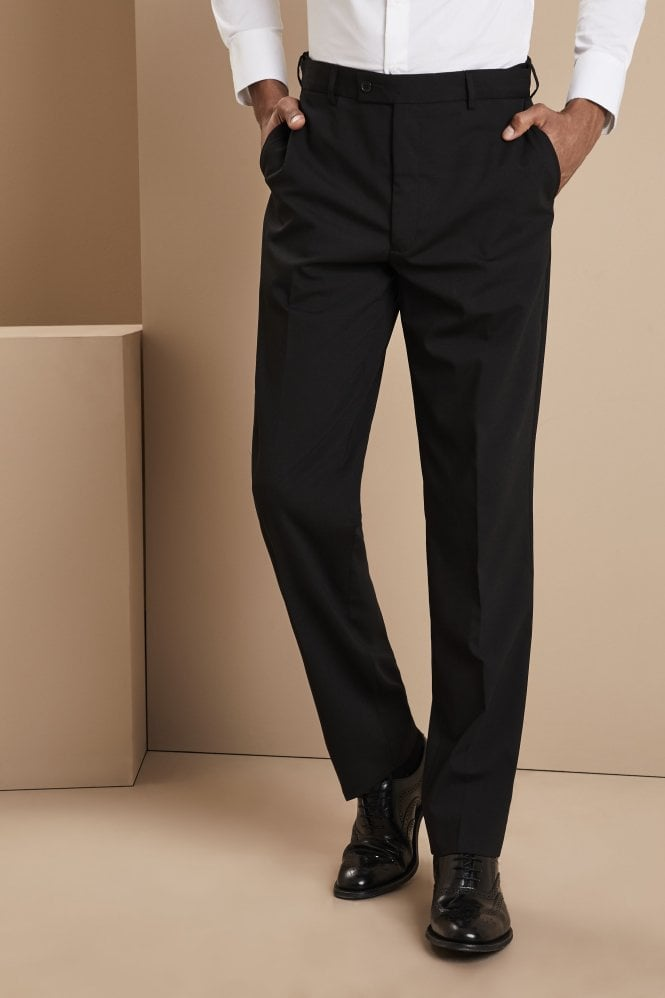

Polywool Black Trousers
Descripción
54% Poliéster, 44% Lana, 2% Licra Ajuste regular Disponible en tres longitudes Largo: Corto: 73,5 cm/29 pulgadas, Regular: 79 cm/31 pulgadas, Largo: 84 cm/33 pulgadas Recomendamos lavar esta prenda a 30°